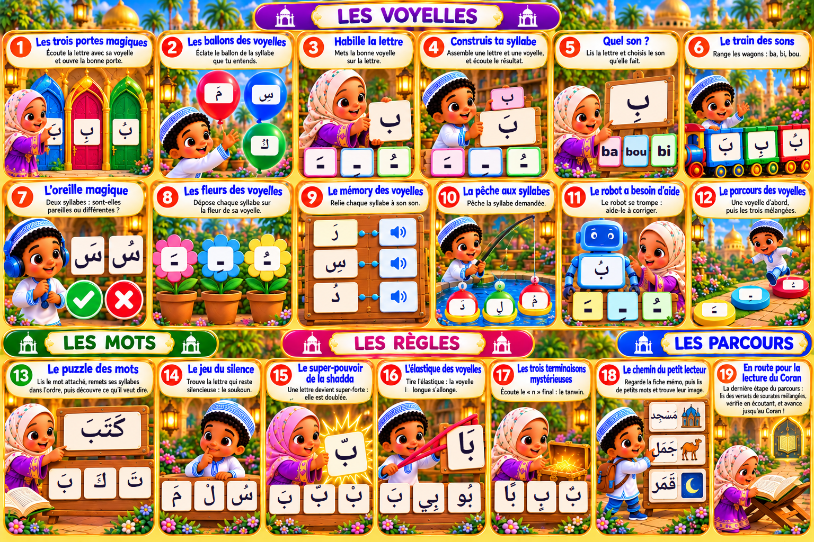

Plaquette 1 : voyelles, mots, règles et parcours (à valider)
Les illustrations, titres et consignes sont ceux de la plaquette d’origine. Seules les zones vierges ont reçu de l’écriture arabe (police Noto Naskh Arabic, la même que le site).

| Jeu | Contenu écrit dans les emplacements |
|---|---|
| 1 Portes | بَ · بِ · بُ |
| 2 Ballons | مَ · سِ · كُ |
| 3 Habille la lettre | ب · ـَ ـِ ـُ |
| 4 Construis ta syllabe | ب + ـَ ـِ ـُ = بَ |
| 5 Quel son ? | بِ → ba / bou / bi |
| 6 Train des sons | بَ · بِ · بُ |
| 7 Oreille magique | سَ · سُ |
| 8 Fleurs des voyelles | ـَ · ـِ · ـُ |
| 9 Mémory | رَ · سِ · دُ |
| 10 Pêche aux syllabes | دَ · لِ · مُ |
| 11 Robot | بُ · ـَ ـِ ـُ |
| 12 Parcours des voyelles | ـَ · ـِ · ـُ |
| 13 Puzzle des mots | كَتَبَ ← بَ · كَ · تَ |
| 14 Jeu du silence | مَ · لْ · سُ |
| 15 Shadda | بّ ← بَ · بّ · بْ |
| 16 Élastique | بَا ← بَ · بِي · بُو |
| 17 Terminaisons (tanwin) | بًا · بٍ · بٌ |
| 18 Chemin du petit lecteur | مَسْجِد · جَمَل · قَمَر |
| 19 Lecture du Coran | (aucun emplacement vierge) |